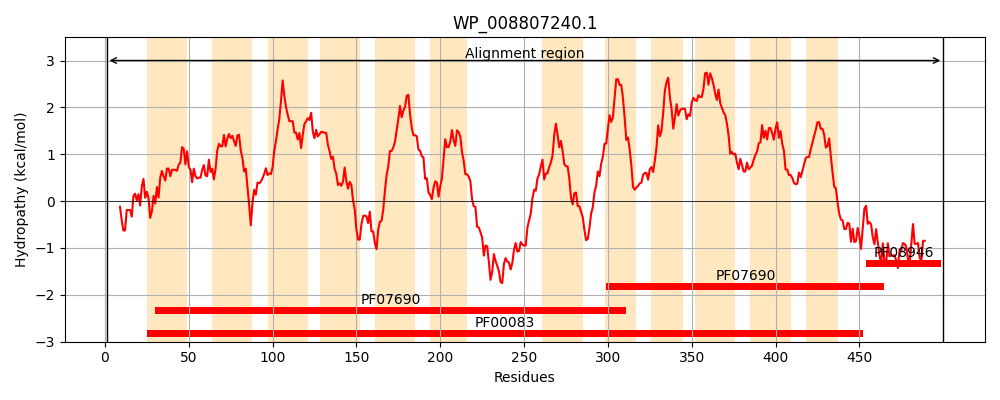
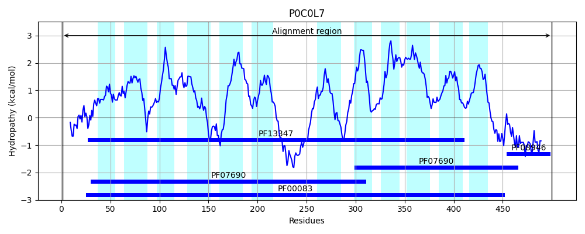
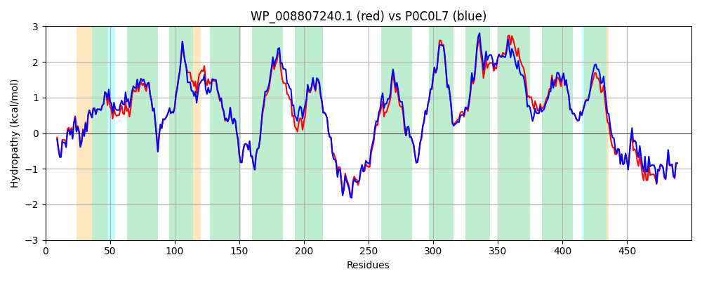

Hit Accession: P0C0L7
Hit TCID: 2.A.1.6.4
Hit Description: gnl|BL_ORD_ID|8875 gnl|TC-DB|P0C0L7|2.A.1.6.4 Proline/betaine transporter - Escherichia coli.
Mach Len: 500
e:0.000000
Query TMS Count : 12
Hit TMS Count: 12
TMS-Overlap Score: 13.150000
Predicted Substrates:CHEBI:9175;sodium(1+), CHEBI:5584;hydron, CHEBI:26272;L-proline betaine, CHEBI:3424;carnitinium, CHEBI:3073;glycine betaine, CHEBI:7077;N,N-dimethylglycine, CHEBI:26271;proline, CHEBI:9406;taurine, CHEBI:17964;pipecolic acid, CHEBI:4756;ectoine, CHEBI:86390;3-pyridylacetic acid
BLAST Alignment:
Score: 2397 , Bit scores: 927 bits, E-value: 0.0e+00, Alignment length: 500, Percentage identity: 91
Query: 1 MLKRKKIKPITLKDVTIIDDGKLKKAITAASLGNAMEWFDFGVYGFVAYALGKVFFPDANPSVQMIAALGTFSVPFLIRPLGGLFFGMLGDKYGRQKILAITIVIMSISTFCIGLIPSYATIGIWAPILLLLCKMAQGFSVGGEYTGASIFVAEYSPDRKRGFMGSWLDFGSIAGFVMGAGVVVLISSVVGEQNFLDWGWRIPFFLALPLGIIGLYLRHALEETPAFQQHVDTMEQGDREGLQDGPKVSFKEIATKHWRSLLTCIGLVISTNVTYYMLLTYMPSYLSHNLHYSEDHGVLIIIAIMVGMLFVQPVIGMLSDRFGRRPFILIGSVALFALAIPAFIMINSNVIGLIFAGLLLLAVVLNCFIGVMASSLPAMFPTHIRFSALASAFNISVLVAGLTPTLAAWLVETTQNLMMPAYYLMVIAVVGMATGLSMKETANRPLKGATPAASDIQEAKEILGEHYDNIEQKIEDIDQEIADLQAKRSRLVQQHPRIND 500
MLKRKK+KPITL+DVTIIDDGKL+KAITAASLGNAMEWFDFGVYGFVAYALGKVFFP A+PSVQM+AAL TFSVPFLIRPLGGLFFGMLGDKYGRQKILAITIVIMSISTFCIGLIPSY TIGIWAPILLL+CKMAQGFSVGGEYTGASIFVAEYSPDRKRGFMGSWLDFGSIAGFV+GAGVVVLIS++VGE NFLDWGWRIPFF+ALPLGIIGLYLRHALEETPAFQQHVD +EQGDREGLQDGPKVSFKEIATK+WRSLLTCIGLVI+TNVTYYMLLTYMPSYLSHNLHYSEDHGVLIIIAIM+GMLFVQPV+G+LSDRFGRRPF+L+GSVALF LAIPAFI+INSNVIGLIFAGLL+LAV+LNCF GVMAS+LPAMFPTHIR+SALA+AFNISVLVAGLTPTLAAWLVE++QNLMMPAYYLMV+AVVG+ TG++MKETANRPLKGATPAASDIQEAKEIL EHYDNIEQKI+DID EIADLQAKR+RLVQQHPRI++
Sbjct: 1 MLKRKKVKPITLRDVTIIDDGKLRKAITAASLGNAMEWFDFGVYGFVAYALGKVFFPGADPSVQMVAALATFSVPFLIRPLGGLFFGMLGDKYGRQKILAITIVIMSISTFCIGLIPSYDTIGIWAPILLLICKMAQGFSVGGEYTGASIFVAEYSPDRKRGFMGSWLDFGSIAGFVLGAGVVVLISTIVGEANFLDWGWRIPFFIALPLGIIGLYLRHALEETPAFQQHVDKLEQGDREGLQDGPKVSFKEIATKYWRSLLTCIGLVIATNVTYYMLLTYMPSYLSHNLHYSEDHGVLIIIAIMIGMLFVQPVMGLLSDRFGRRPFVLLGSVALFVLAIPAFILINSNVIGLIFAGLLMLAVILNCFTGVMASTLPAMFPTHIRYSALAAAFNISVLVAGLTPTLAAWLVESSQNLMMPAYYLMVVAVVGLITGVTMKETANRPLKGATPAASDIQEAKEILVEHYDNIEQKIDDIDHEIADLQAKRTRLVQQHPRIDE 500 | Protein Hydropathy Plots: |
|---|
|  |  |
Pairwise Alignment-Hydropathy Plot:
|
|---|
|  |